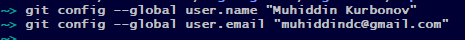
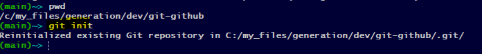
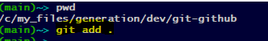
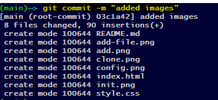
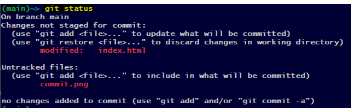

git config --global user.email “[email address]”

| Git Commands | Usage | Example | Description |
|---|---|---|---|
| git config |
git config --global user.name “[name]” git config --global user.email “[email address]” |
 | This command sets the author name and email address respectively to be used with your commits. |
| git init | git init [repository name] |  | This command is used to start a new repository. |
| git clone | git clone [url] | |
This command is used to obtain a repository from an existing URL. |
| git add | git add [file] | This command adds a file to the staging area. | |
| git add | git add . |  | This command adds all to the staging area. |
| git commit | git commit -m “[ Type in the commit message]” |  | This command records or snapshots the file permanently in the version history. |
| git status | git status |  | This command lists all the files that have to be committed. |
| git log | git log | This command is used to list the version history for the current branch. |